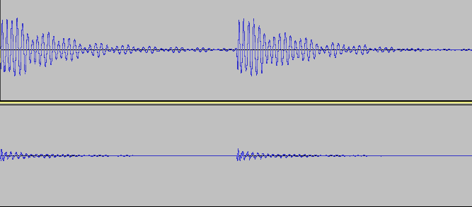

Sound & Audio Processing
Sound Waves
Sound waves have a set of characteristics:
- Amplitude
- Strength of the wave in dB. This is the loudness of the sound.
- Frequency
- Number of cycles per second in Hz. This is the pitch.
- Wavelength
- Distance travelled in one cycle
- Period
- Time for one cycle
Audio Perception
The Human Ear can detect sound between 20Hz and 20,000Hz. The sound pressure level is what we can hear and it is measured in decibels.
Some examples of real world sounds are:
- Breathing: 10dB
- Whisper: 30dB
- Conversation: 60dB
- Niagra Falls: 90dB
- Rock Concert: 120dB
- Rocket Engine: 180dB
120db is the point at which you can start to experience pain due to the intensity of the sound pressure.
Digital Audio Sampling
There are two key parameters needed to represent an analogue signal as a digital signal:
- Sampling rate: number of samples per second
- Resolution: number of sampling levels for storage
Principle 1
The amplitue can be sampled at regular intervals. This is measured in Hz (e.g. CD = 44.1kHz)
Principle 2
Quantization is used to distinguish what state a signal is in. E.g. Amplitudes of 1-4 become a 0, amplitudes of 5-8 become a 1
Principle 3
If you put samples together you can create a copy of the sound. This means you have converted from analogue to digital. However, this can cause a loss of quality in the sound.
Filters
Used to remove unwanted sounds from an audio file.

File Size
The file size of an uncompressed audio track can be calculated using:
Bit-Rate = Sampling Rate * Resolution * No. of Channels * Time (sec) / Bits per Kilo-Bit
File size = Bit-Rate * Track Length (sec) / 8
Compression
Compression can be used to reduce the overall size of a file, for example, when transmitting the file over the Internet. MP3 compression works by removing data that has no effect on how the sound is heard.